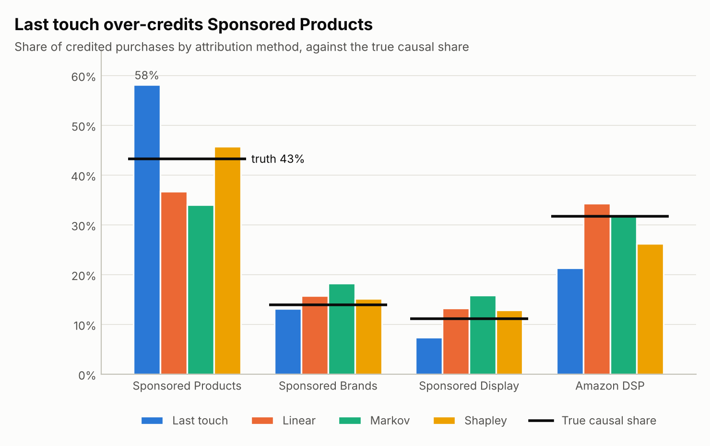

From ad journeys to a budget plan.
Each method answers one question, and each answer is checked against what the simulator knows.
Amazon Ads analytics the way a brand's data science team does it, with every method scored against a simulator that knows the true answer.
2026
Attribute. Test. Plan.Amazon's attribution reports credit an ad with every purchase it touched. A brand's real questions are different: what did the ads cause, and where should the next dollar go? Retail Media Lab simulates two years of advertising for a fictional supplements brand, so every standard method can be scored against the truth.
How it works
Each method answers one question, and each answer is checked against what the simulator knows.
01
Ad journeys with a known truth
02
Five ways to split the credit
03
A geo holdout for DSP
04
A marketing mix model with intervals
05
The next dollar where it earns most
The standard methods a brand's data science team uses, each held to the truth.
Path to conversion, new-to-brand, frequency, overlap and time to conversion; groups under 100 users dropped, as in AMC.
01
Last and first touch, linear, Markov and Shapley, each against the true share.
02
Difference-in-differences and synthetic control, with placebo tests that check the intervals.
03
Adstock and saturation per channel, an ensemble of the best fits, and bootstrap intervals.
04
Daily spend per channel under a budget, change limits and a minimum ROAS.
05
An LLM agent that answers by calling the analyses, saved queries and guarded SQL.
06
Results
All data is synthetic: two years of advertising for a fictional brand, Fernway Nutrition. The simulator knows the true effect of every channel.
how much click-based attribution over-credits ads: 5,809 purchases credited, 3,234 caused.
DSP's incremental ROAS from the geo holdout (95% CI 1.87 to 2.19). True value: 1.90.
ad-driven sales at the same budget from the optimizer's plan, about $168k a year: 89% of the best possible plan.

What the ads caused, which report to trust, and where the next dollar should go.
Incremental sales, not credited sales.
For brand managers
01
A budget plan within your limits.
For media planners
02
A geo holdout with honest intervals.
For marketing science
03
Paths, overlap and time to conversion, in SQL.
For analytics teams
04
Every attribution rule against the truth.
For finance partners
05
Answers that call the analyses.
For the whole team
06
Free under the MIT license. The build takes about 30 seconds. No API key needed.
Clone
git clone https://github.com/faizanreza-cs/retail-media-lab && cd retail-media-labInstall
make setupBuild, then ask
make build
rml ask "What incremental ROAS did the DSP geo holdout show?"I build measurement, analytics and AI agents like this one for CPG and consumer health brands.
Open to freelance projects and full-time roles.
No. Real Amazon Marketing Cloud data can't be shared, so a simulator builds two years of advertising for a fictional brand. Its value is that it knows the true answer, which real data never gives you.
It credits every purchase by a shopper who saw an ad. Sponsored Products reach shoppers already searching the category, who often buy anyway.
DSP is pinned down: 1.95 against a true 2.00, in line with the geo test. Sponsored Products is always on and near saturation, so its interval is wide (1.32 to 3.89); an experiment would narrow it.
The saved queries are written in AMC's style and follow its 100-user rule, but AMC's real tables have more columns and rules, so they'd need adapting.
I can design the test, build the model and plan the budget with your team.